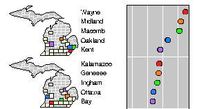
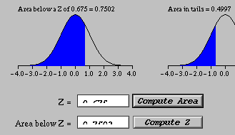
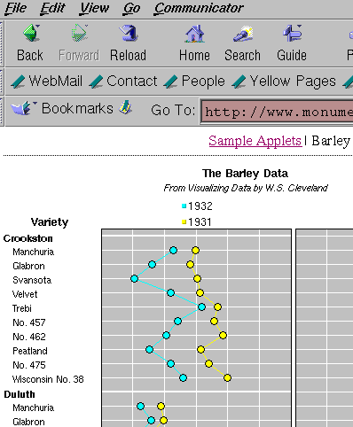

|
 |
Didn't you always want to surf the Web and get credit for it?
Then, this 2 or 3 credit course is certainly right for you! We will discuss
a multitude of topics how Statistics and the Web are
related today, e.g., statistical software on the Web,
Web-based tools for teaching undergraduate statistics classes,
electronic textbooks, electronic journals, main data sources on the
Web, data collection through the Web, etc.
|
|
As a prerequisite, this class only requires basic statistical
knowledge as taught in Stat 2000 or Stat 3000. Therefore, this
class should be open to everyone in Statistics, Mathematics,
Education (either as a current or future teacher of Math/Stats),
Computer Science, Administrative Sciences, Natural Resources,
and anybody else interested in Statistics and the Web.
|
 |
|
 |
Please contact me in person, by phone, or by e-mail in case of
any question.
But act soon! Since we will be using an electronic classroom where each student will sit in front of his/her own computer, the class size is very limited. The class will meet MTRF 8:40-10:50am in GEOL 310 between Monday May 8, 2000, and Friday June 2, 2000. |